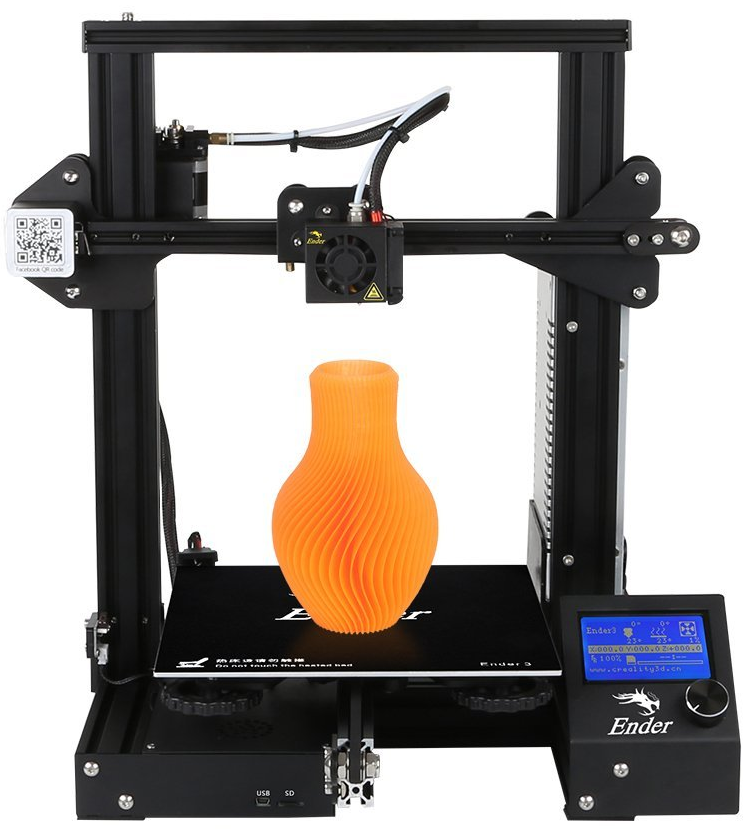
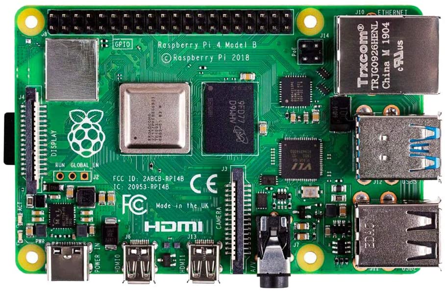
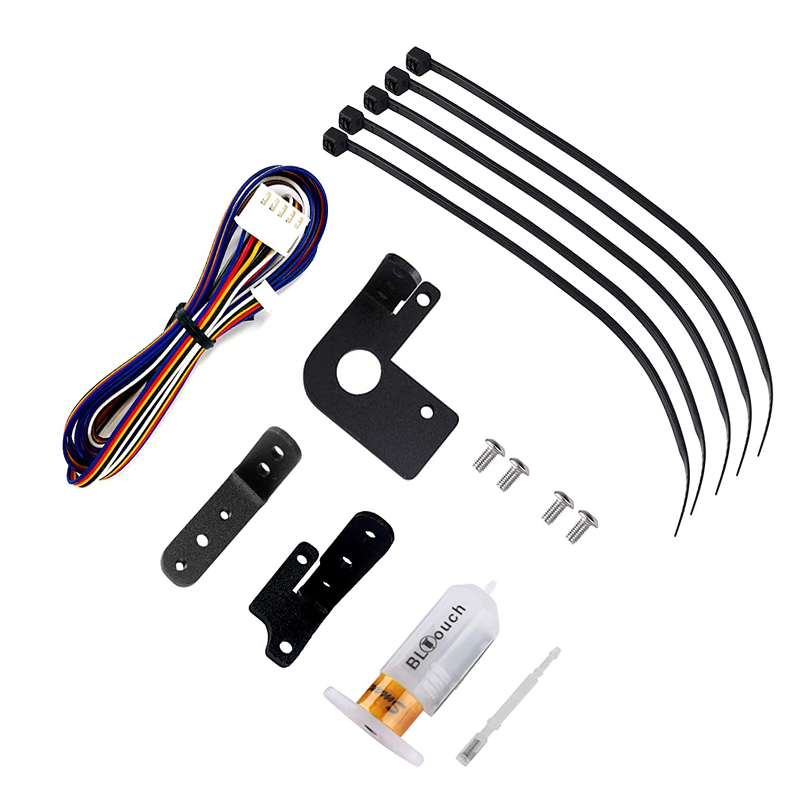
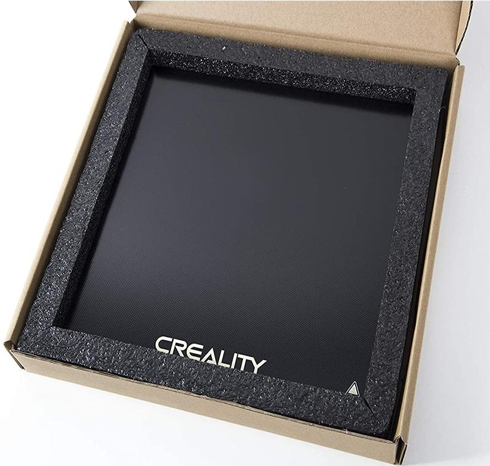
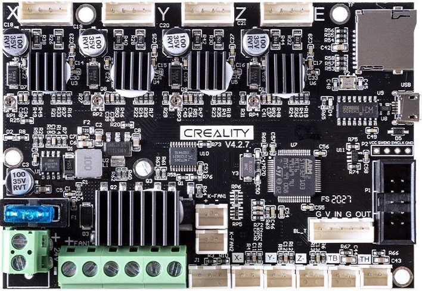
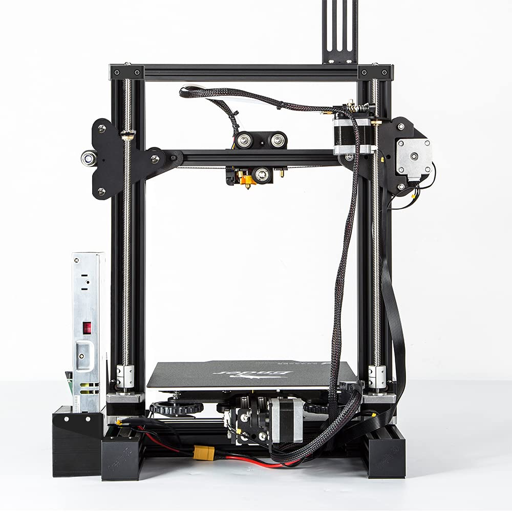
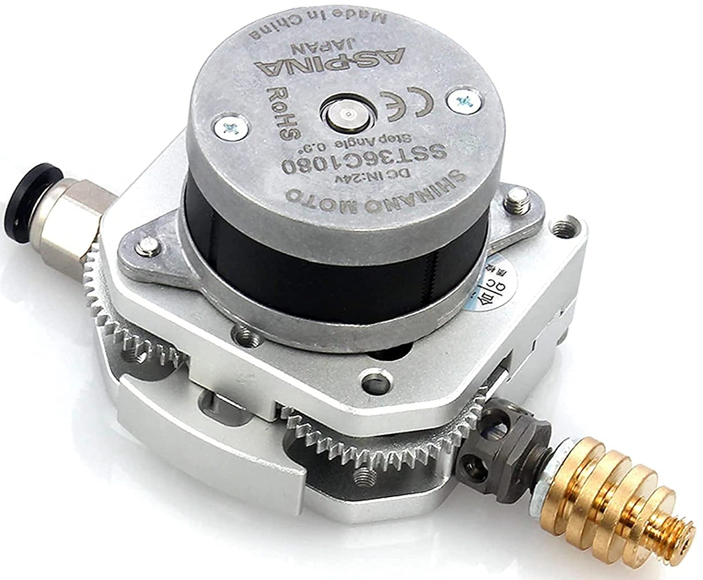
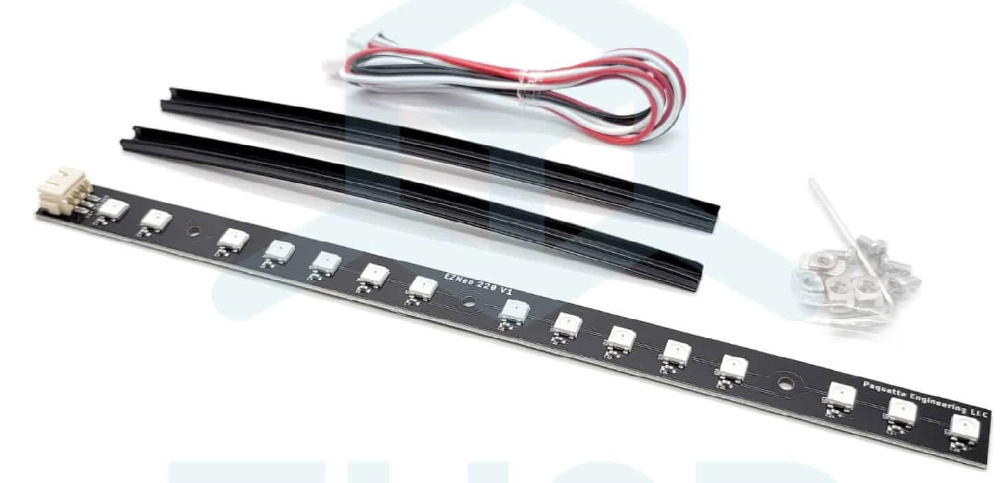
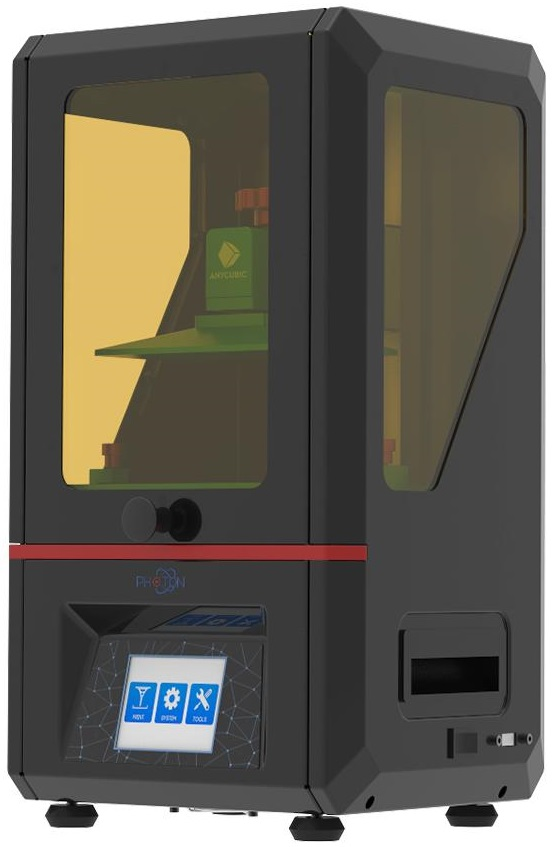
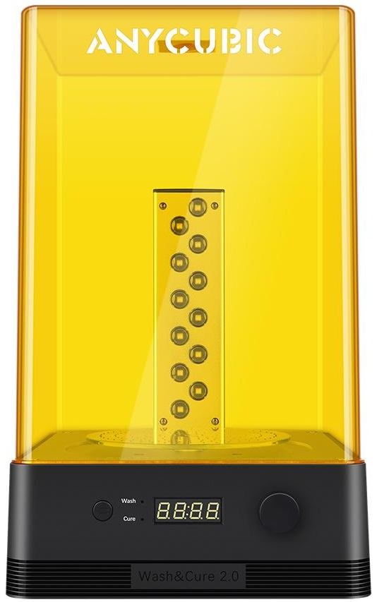

3d-printing (Updated December 13th 2021)
Printing... if you have ever setup a printer or worked in an office and had to print stuff, you know how frustrating printing can be. From the drivers to the network, to the paper tray, it's all annoying and can ruin your print experience at any time. 2D Printing on paper has been a challenge for office workers since they came on the market. In fact printers are so annoying they made a movie about it.

3d printing can be just as frustrating and annoying as any printer you have ever used. Imagine that 40 page assignment you had to have for your professor/boss that would not print properly. 3D printing is just like that, except, you cannot simply print page 38 over again and be ok. Since they build directly upon the layer below, if a layer(page) is not almost perfect the next layer will also not be perfect and it will build on that small error compounding over time into a failed print.
That said you can do a lot to make sure your print succeeds. From choosing the right printer, and the right filament. To leveling your print bed properly, and choosing the necessary slicer settings. You too can dial in your printer just right.
What kind of printer should I get?
Before you choose a 3d printer you should think ahead about what you want to print. Minis, jewelry, and small parts are great for a DLP resin printer. Larger parts like: toys, structural elements, anything large , etc. are probs best printed on an FDM filament printer.
I am pretty happy with my Ender3Pro FDM printer. Recently I have upgraded it from the stock model to make it even better. FDM Printers like the Ender3pro are harder to upkeep as they have many moving parts and are quite technical to operate. I have been looking into resin printers for high detail small parts like Dnd Minis and jewelry. Resin printers are fast, easy to use and provide great detail to your prints. They are much simpler than FDM printers as they have far fewer moving parts.
The Ender 3 pro is no longer produced and has been replaced by the Ender 3 v2. Check out this great video on its pro and cons: https://youtu.be/sbRHZUnmfYw
Small resin printers in the sub $250 range are basically the same as larger more expensive versions. They are perfect for minis and high detail projects. This is a great video on resin printing: https://www.youtube.com/watch?v=WNgtWLBs4tc&ab_channel=ZackFreedman. I watched this and I was immediately inspired to plan my next printer purchase for resin minis.
So far, I have an the most experience with FDM printers and I am just getting started with resin.
Despite all the frustration and difficulty I have a lot of fun printing all sorts of stuff for fun and profits. I have compiled the information here in an effort to help others who are interested in the 3d printing world.
Videos/People to watch
- This is a pretty cool video on getting started with 3d printing
- Also Zack Freedman has a great channel on all things maker and printer related
- This young lady, AuroraTech, is super informative as well.
My FDM Printer Setup
Ender 3 Pro

$209 The Ender 3 Pro cames as a kit to assemble. This made me more familiar with it and since I built it I can always fix it. :)
Current Ender 3 Pro Upgrades:
These are not required. I used a stock ender 3 for more than a year before any upgrades at all. Now I think it performs better and it's super fun to tinker with and improve your printer. Here are the upgrades I have done, in roughly the order I did them.
Raspbeery Pi With the Octoprint Print Controller
If our printer supports it, you should set up an Octoprint print server. It provides a web interface to send jobs to your printer and basically control all of it's functions remotely.

$75-$160 Affiliate link
- Software: https://octoprint.org/
Bed Leveling Sensor

$50 Affiliate Link, Webpage
- This sensor precisly neasure the distance to your print bed and uses some fancy maths to calculate the flatness of your print bed.
Tempered Glass Build Plate

$20 Affiliate Link, Official Page
Creality 4.2.7 Silent Control Board

$50 Affiliate Link , Official Webpage
- This was the single best upgrade I have made. The upgraded board makes the printer much quieter and faster, pretty much silently running the stepper motors. New Ender 3 Pros come with a newer control board. I am not sure of the model. Now I think they come stock with the better 4.2.2 or 4.2.7.
Dual Z-Axis

$40 Affiliate Link
- The Ender 3 Printers only have a single Z-Axis and can have a tendancy to sag slightly on the right hand side. The dual Z axis ensures but sides are perfectly inline with each other.
OMG EXTRUDE Direct Drive Extruder

$85 Affiliate link
RBG Lights

$24 Official Site
- This is more important then you might think if you plan to create timelapse videos of your prints. Also it flashes colors to indicate printing issues.
Planned Upgrades
- 3d Printed Fan Shroud that allows for cooling on all sides of the print head. Currently it is one sided :(
Resin Printers
 
I also have a resin printer for Dnd minis and small precision parts. I have the Anycubic Photo S with the Wash and Cure Station 2.0.
I am currently waiting for the wash and cure to be delivered so I have not used the resin printer as of yet. It's all set up and ready to go.
Other Printers Of Note
If you have a larger budget and larger ambitions, and or want to print super long/tall items, or a huge series or multiples this is what you would want :) $+1K https://www.creality3dofficial.com/products/cr-30-infinite-z-belt-3d-printer
Stuff to print
For starters try printing a Benchy

- Benchy is quick to print and can help fine tune your prints. A good benchy is an indicator of a well set up printer.
Tools for Creating Minis
Hero Forge has a great tool for designing custom gaming minis that you can download at STL files for your slicer. Custom STL files are about $3.50 USD.
Eldritch Foundry also lets you create custom STL files for download.
My Mini Factory has tons of free minis to print.
Sites with paid and free models to print
Here are a few places to get awesome things to print
Software You Will Need
You can download ready to print files from the internet quite easily, but if you have an idea for a print you will need to render your idea in a drawing program. You will likely want to use a parametric drafting program to best create your models. There are also sculpting tools that will render STL files but I have not tried them.
Here are two options to try. Both are well supported with tons of video tutorials on youtube.
- Drawing/Modeling/Drafting Software
- Fusion 360 (might be free for personal use) I have the most experience with this.
- Parametric Drafting software for creating and editing stl files to print.
- FreeCad (free software) I have never sucessfully used this to create a model. I have not given it the
attention I have given Fusion 360.
- Open Source (Free) Parametric Drafting software.
- Fusion 360 (might be free for personal use) I have the most experience with this.
Once you have a model to print, you will need "Slicer" software to convert your model to GCode your printer can understand. Slicers generally take STL files as input. Most slicers are pretty easy to use. Create a new project and import/open your stl files. Arrange them on the print plate and slice.
- Slicers (I have tried)
- Super Slicer
- This is an awesome slicer that is easy to use and
- https://github.com/supermerill/SuperSlicer/releases
- Goto Assets and choose your OS.
- Cura
- Super Slicer
Finally when you are printing you will want the best interface possible. For my Ender 3 Pro I use Octoprint. Octoprint connects to your printer and controls it remotely. You can use the web interface to upload files to print and track print progress and status. You can use additioinal plugins to create time lapse videos of your prints or send you an SMS when printing is done. Watch or check on your print remotely via webcam.
- Octoprint: https://octoprint.org/
- Latest Version
- SDCard Creation (for setting up octoprint)
- Latest Version
How do I do any of this? What do I do first?
- Buy an FDM 3d printer or buy a Resin 3d printer
- Assemble the printer according to the instructions.
- If your printer supports using one, buy a Raspberry Pi, SD Card, Power supply (The Photon S does not support Octoprint)
- Download and Setup Octoprint.
- Install Software
- Drawing Software
- Fusion 360
- FreeCad
- Others ???
- Slicing Software
- FDM Slicers
- Resin printer Slicer
- Photon Workshop (Slicer for
Anycubic
Resin Based Printers.)
- Came with the printer on the USB stick, but you should get the latest version.
- Photon Workshop (Slicer for
Anycubic
Resin Based Printers.)
Printing Workflow
Your workflow will be as such:
- Create/Download an model in STL format.
- Import/Open your stl file in your slicer of choice.
- Update your slicer and print settings for this specific file.
- Generate your GCode with the Slicer software.
- Upload GCode to your Printer via sneaker-net or Octoprint depending on printer.
- Print your file!
- Remove from build plate and remove supports.
- Clean and Cure Resin
- Enjoy your print!
Some of my successfull prints
Future Topics of interest
What would you like to see more info about?
- 3d Printing Consumables
- Filaments
- COEX PLA and PLA Prime
- Matter Hackers Build Filament
- Solutech ABS
- Resin
- Anycubic Basic Grey 405nm
- Filaments
Do You Have A Question? A Comment? Did you find an error?
If you want to ask a question, comment, or report an error please click here and do your thing.